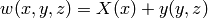
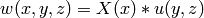

Solvers¶
The solvers module in SymPy implements methods for solving equations.
Algebraic equations¶
Use solve() to solve algebraic equations. We suppose all equations are equaled to 0, so solving x**2 == 1 translates into the following code:
>>> from sympy.solvers import solve
>>> from sympy import Symbol
>>> x = Symbol('x')
>>> solve( x**2 - 1, x )
[1, -1]
The first argument for solve() is an equation (equaled to zero) and the second argument is the symbol that we want to solve the equation for.
- static solvers.solve(f, *symbols, **flags)¶
Solves equations and systems of equations.
Currently supported are univariate polynomial, transcendental equations, piecewise combinations thereof and systems of linear and polynomial equations. Input is formed as a single expression or an equation, or an iterable container in case of an equation system. The type of output may vary and depends heavily on the input. For more details refer to more problem specific functions.
By default all solutions are simplified to make the output more readable. If this is not the expected behavior (e.g., because of speed issues) set simplified=False in function arguments.
To solve equations and systems of equations like recurrence relations or differential equations, use rsolve() or dsolve(), respectively.
>>> from sympy import I, solve >>> from sympy.abc import x, y
Solve a polynomial equation:
>>> solve(x**4-1, x) [1, -1, -I, I]
Solve a linear system:
>>> solve((x+5*y-2, -3*x+6*y-15), x, y) {x: -3, y: 1}
Partial Differential Equations (PDEs)¶
- static pde.pde_separate(eq, fun, sep, strategy='mul')¶
Separate variables in partial differential equation either by additive or multiplicative separation approach. It tries to rewrite an equation so that one of the specified variables occurs on a different side of the equation than the others.
Parameters: - eq – Partial differential equation
- fun – Original function F(x, y, z)
- sep – List of separated functions [X(x), u(y, z)]
- strategy – Separation strategy. You can choose between additive separation (‘add’) and multiplicative separation (‘mul’) which is default.
- static pde.pde_separate_add(eq, fun, sep)¶
Helper function for searching additive separable solutions.
Consider an equation of two independent variables x, y and a dependent variable w, we look for the product of two functions depending on different arguments:

Examples:
>>> from sympy import E, Eq, Function, pde_separate_add, Derivative as D >>> from sympy.abc import x, t >>> u, X, T = map(Function, 'uXT')
>>> eq = Eq(D(u(x, t), x), E**(u(x, t))*D(u(x, t), t)) >>> pde_separate_add(eq, u(x, t), [X(x), T(t)]) [D(X(x), x)*exp(-X(x)), D(T(t), t)*exp(T(t))]
- static pde.pde_separate_mul(eq, fun, sep)¶
Helper function for searching multiplicative separable solutions.
Consider an equation of two independent variables x, y and a dependent variable w, we look for the product of two functions depending on different arguments:

Examples:
>>> from sympy import Function, Eq, pde_separate_mul, Derivative as D >>> from sympy.abc import x, y >>> u, X, Y = map(Function, 'uXY')
>>> eq = Eq(D(u(x, y), x, 2), D(u(x, y), y, 2)) >>> pde_separate_mul(eq, u(x, y), [X(x), Y(y)]) [D(X(x), x, x)/X(x), D(Y(y), y, y)/Y(y)]